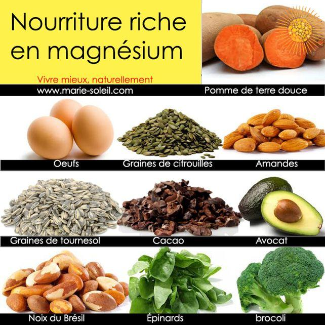
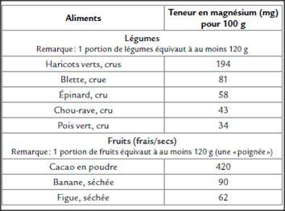
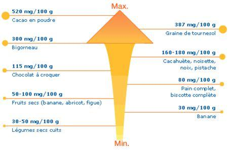

Médecin de son état mais passionné de nutrition et de psychiatrie, le docteur Bulidon a su lier, avec l'expérience de son exercice, ses deux orientations médicales dans une méthode alimentaire spécifique : la PsychoMorphoNutrition. Ce médecin est parti d'un simple constat que l'humain n'est pas qu'un corps mais aussi un esprit rempli d'affects différents. Notre nutrition est souvent le reflet de nos personnalités. Dans les cas extrêmes de TCA ou Trouble du Comportement Alimentaire, la nourriture sert à compenser des carences affectives, souvent venant de l'enfance comme dans la Boulimie. Une bonne alimentation ne passe pas uniquement et simplement dans la conception d'un repas mais aussi par un mieux-être psychique. Ainsi, pour le Docteur Bulidon il ne suffit pas de Bien manger mais il faut Mieux manger. Il fait ainsi sienne la pensée de Montaigne « Un esprit sain dans un corps sain ».
Automne, saison intermédiaire mais particulièrement importante dans la préparation de l'organisme à l'hiver en faisant une cure de vitalité et de vitamines naturelles.
Afin de faire face à la morosité climatique entre la pluie, la baisse des températures mais surtout la diminution de l'ensoleillement. Ce manque de soleil ayant pour principales incidences néfastes :
Une majoration de l'anxiété et de son stress.
Un sommeil non réparateur engendrant une fatigue latente prenant un mode chronique.
Il faut suppléer son organisme en fruits et légumes frais mais surtout de saison. Ce qui permettra de renforcer son organisme par le biais de vitamines, de sels minéraux mais aussi de macronutriments comme le Calcium, le Potassium et bien sûr le Magnésium.
A ce jour nous pourrions nous intéresser au Magnésium dont les apports recommandés journaliers sont de 350 mg par jour. Mais ces besoins peuvent être majorés comme chez les seniors avec comme base de calcul : 6 mg/kg de poids. Soit par exemple une personne pesant 70 kg aura besoin par jour de 6.70 = 420 mg de magnésium par jour.
Il est à noter que ces besoins sont aussi majorés par la grossesse, la croissance des enfants, le sport ainsi que durant un stress permanent comme en milieu professionnel !
Il faut tout de même savoir que ce macronutriment représentante 24 g de notre poids. En se situant surtout pour 60 % dans les os, pour 25 % dans les muscles et pour 15 % dissimilé dans le foie, les reins et le cerveau. Ce qui explique ses propriétés.
Ce Magnésium est un bon palliatif à l'anxiété, à des troubles du transit comme la constipation. Mais ce macronutriment a aussi une influence dans la transmission de l'influx nerveux au niveau musculaire dont la carence se manifeste par des crises de spasmophilie d'où son rôle manifeste dans la contraction musculaire. Mais il participe aussi à certaines réactions enzymatiques comme dans le métabolisme des sucres. Ce que l'on sait moins, c'est que ce Magnésium a un rôle dans l'ossification en association avec du Calcium et de la vitamine D. Ainsi la lutte contre l'ostéoporose est mieux jugulée par cette association qu'avec du Calcium seul en apport.
Cette carence est souvent relevée dans 68 à 75 % de la population. Les manifestations de cette carence sont surtout une hyperexcitabilité neuromusculaire sur trois plans :
Cardiaque avec des palpitations.
Neuromusculaire avec des crampes, des tressautements des paupières, voire des tremblements.
Cérébral avec du stress, de l'anxiété et des troubles du sommeil.
Alors qu'à l'inverse l’excès entraîne des nausées, un ralentissement cardiaque voire une chute de la tension artérielle avec risque de malaise.
Les apports en Magnésium doivent s'établir dans une démarche gourmande au travers d'un gras végétal qui peut servir de coupe faim à 16 h pour éviter les fringales du dîner ou nocturnes comme les amandes qui vous apportent pour 50 g, 116 mg de Magnésium ou des noix qui sont, elles, riches en Acides Gras Insaturés de type Oméga 3, important pour la prévention de maladies cardio-vasculaires et cérébro-vasculaires mais bien sûr le plus apprécié : le chocolat noir dont 100 g de poudre de cacao apportent 376 mg de magnésium accompagné de fruits qui en plus de nous apporter glucides et vitamine C ( antioxydant luttant contre le stress oxydatif des cellules et donc contre le vieillissement cellulaire ) ceci constitue à la fois un apport énergétique et une source naturelle non négligeable en Magnésium comme les figues sèches dont les 100 g donnent 53 mg de ce macronutriment ou les pruneaux qui sont en plus riches en polyphénols avec un indice glycémique faible, sans parler de sa bonne incidence sur le transit ou les abricots, faciles à prendre en randonnée ou en jouant une partie de golf ou de tennis voire la banane mais qui est plus calorique avec 90 kcal pour 100 g.
Ces gras végétaux et ces fruits peuvent être associés comme je le préconise dans mon livre la « PsychoMorphoNutrition ». Mais certaines eaux ont aussi une certaine richesse en Magnésium comme pour les eaux plates : Hépar 110 mg par litre et pour les eaux gazeuses : Quézac avec 95 mg par litre.
Ce qui prouve que l'on peut entretenir une bonne santé avec une alimentation saine et gourmande, tout en respectant le cycle des saisons !
Nos lecteurs du Donbass auront sans doute plus de difficultés à trouver ces eaux minérales mais les premières neiges ayant déjà fait leur apparition, cette cure de Magnésium est d’autant plus urgente et importante.
Partager cette page